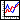
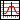
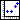

sélection de la fenêtre du graphe sélection de la fenêtre du graphe dans l'espace des fréquences (transformée de Fourier)
sélection de la fenêtre du graphe dans l'espace des fréquences (transformée de Fourier)

sélection de la fenêtre statistiquesélection de la fenêtre “ texte ” des grandeurs (définition et valeurs)

sélection de la fenêtre du graphe des paramètresbascule vers le programme d'acquisition si l'acquisition a été faite par un programme extérieur.
Gestion des pages : si le nombre de pages est supérieur à un, il y a apparition de boutons permettant de changer de page : première page, page précédente (raccourci F7), page suivante (raccourci F8) et dernière page. En cas de superposition de pages, le numéro de la page courante est affiché avec la couleur du graphe correspondant et permet de sélectionner les pages actives. La valeur des paramètres de la page courante est affichée à la suite ainsi que le commentaire (modifiable). Pour choisir les paramètres affichés cliquer dans la zone correspondante.
Créé avec HelpNDoc Personal Edition: Générateur facile de livres électroniques et documentation